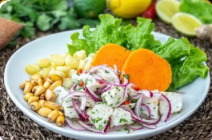
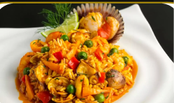
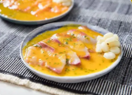
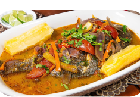

Platos tradicionales como el ceviche, la pachamanca y el ají de gallina reflejan la diversidad histórica del Perú.
Reseña de platos típicos Portafolio
El ceviche es uno de los platos más representativos del Perú y su origen se remonta a las culturas precolombinas.

El arroz con mariscos es uno de los platos más tradicionales de la costa del Perú y tiene influencia de la cocina española.
La causa limeña es un plato tradicional del Perú que tiene sus orígenes en la época precolombina.

El tiradito es un plato tradicional del Perú que tiene una fuerte influencia de la inmigración japonesa.

Su nombre proviene de la forma de preparación, ya que el pescado se cocina en su propio jugo con verduras y condimentos.